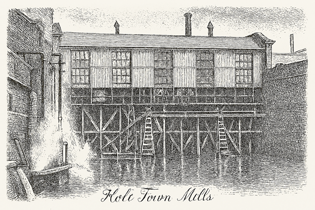
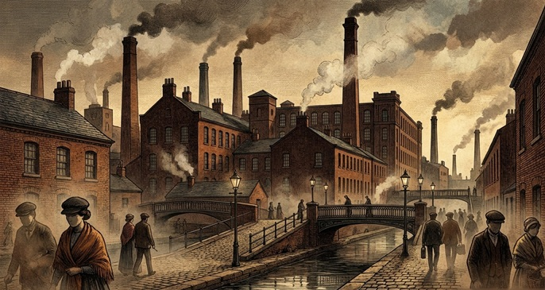
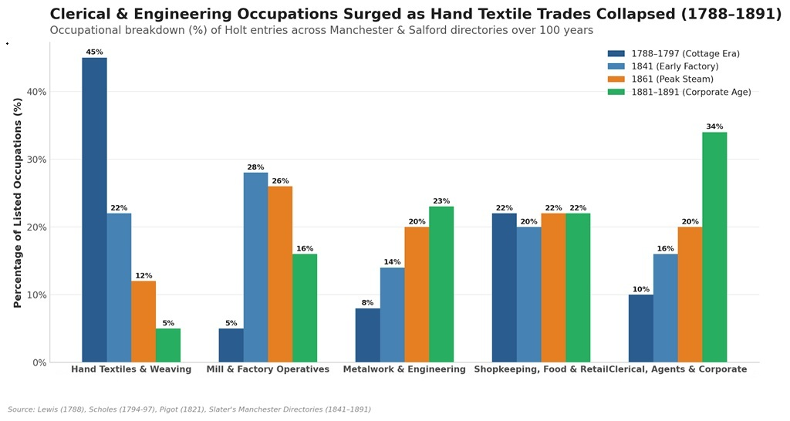
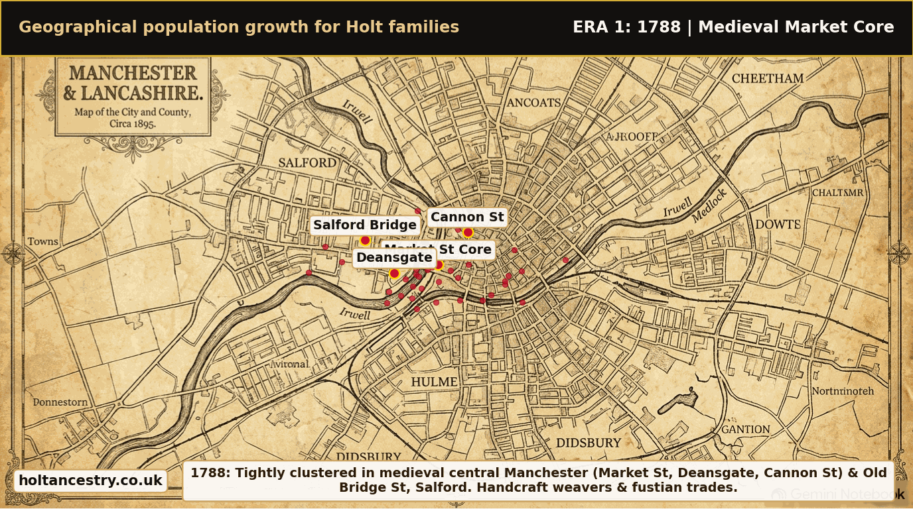
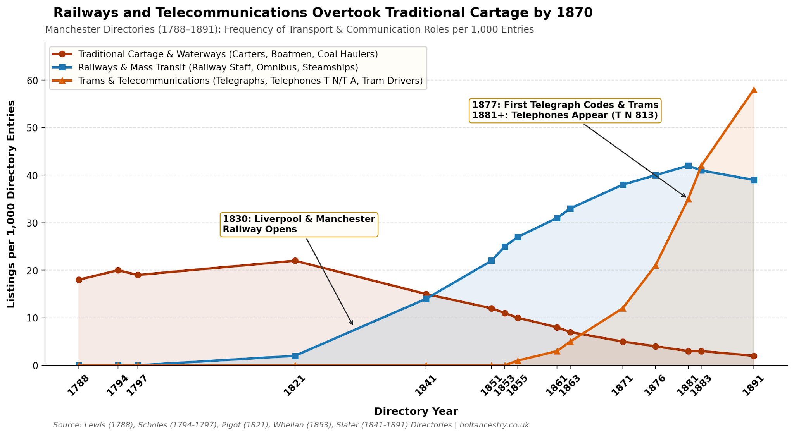

The Industrial Revolution, taking firm hold in Britain from the mid-eighteenth century and reaching its zenith in
the nineteenth, profoundly altered Lancashire, transforming it from a county of pastoral parishes, woollen
fulling mills, and scattered proto-industry into the undisputed heartland of global cotton manufacturing.
Mechanised spinning and weaving driven by Hargreaves's jenny, Arkwright's water frame, Crompton's mule, and
Watt's steam engine coupled with canal and railway expansions, abundant coal, and Liverpool's transatlantic cotton
imports, created explosive growth in urban centres such as Manchester (Cottonopolis), Rochdale, Oldham, and Bolton.
This shift brought immense wealth to some while disrupting traditional agrarian and gentry economies, prompting many
established families to invest in factories, mills, and trade, or to relocate toward mercantile opportunities, thereby
adapting their influence to the new industrial order.
The Holts of Lancashire, long established as Rochdale parish gentry with ancient seats at Stubley Hall near Littleborough
and Castleton Hall south of Rochdale held across centuries from medieval origins through the Tudor and Stuart eras embodied
this transition from landed proprietors to active participants in commerce and industry. The senior gentry line, rooted
in manorial rents, water mills for earlier textile processing, and county offices, saw its direct hold on these estates
wane: Castleton Hall passed to merchant buyers like the Walmsleys in 1772, and Stubley followed suit in time, reflecting
broader pressures on traditional landownership. The Holt families demonstrated characteristic pragmatism,
everaging Rochdale's strategic position near Manchester's markets, the Roch valley's water power, and emerging coal
supplies to engage in the cotton boom, brewing, and related ventures.
Branches of the Holts embraced the era's opportunities across key sectors. David "Quaker" Holt founded Holt Town Mills
in Manchester around 1785, establishing a pioneering "factory colony" an integrated site of spinning and weaving mills
with associated worker housing that exemplified early industrial paternalism in Cottonopolis at the revolution's outset,
though it encountered financial difficulties by the 1790s. In brewing, Joseph Holt established his eponymous Manchester
brewery in 1849, building a substantial enterprise; his son, Sir Edward Holt (created 1st Baronet of Cheetham in 1928),
expanded it into a major industrial concern while rising as a philanthropist, civic figure, and advocate for public health
reforms. From Rochdale roots, George Holt Senior relocated to Liverpool as a cotton broker, accumulating wealth vital to
Lancashire's raw material supply; his son Alfred Holt (1829-1911) engineered innovative compound steam engines and founded
the Blue Funnel Line (Ocean Steam Ship Company) in 1865, operating efficient vessels for Far Eastern trade that underpinned the
cotton import chain essential to the mills, with his brother George also involved in the Lamport & Holt shipping line and
owning Sudley House.
Collateral and lesser lines contributed locally as well. Thomas Holt ran operations at Lane End Mill in the Heywood/Rochdale
district during the mid-nineteenth century, initially in cotton spinning partnerships before adapting to flock production
from textile by-products, a practical niche in the region's resource-recycling economy. Other connections appear in
Rochdale's pioneering cooperative movement, with Holts among the founders of the Rochdale Society of Equitable
Pioneers in 1844. Through these diverse paths from textile mills and factories to brewing empires, cotton brokerage, and
global shipping the Holts preserved their lineage's prominence, shifting from Civil War-era Royalist loyalties and
gentry status to commercial success that helped define Lancashire as Britain's industrial powerhouse. This adaptability
ensured the family's enduring legacy amid the transformative smoke and steam of the age.
Holt Town Mills
Holt Town Mills stood in the Holt Town district of Manchester, an early industrial settlement developed along of the River
Medlock. Established in the late eighteenth and early nineteenth centuries, the mills were part of the regions rapidly
expanding cotton industry, drawing power first from water and later from steam. Around them grew a dense cluster of
workers' housing, workshops, and canals, forming one of Manchester's characteristic mill
communities.
The Holt Town Mills complex typically comprised large multi-storey brick buildings with rows of tall windows to
maximise light for spinning and weaving. Over time, the area became closely associated with industrial
life shift work, noise, smoke, and the constant movement of goods and people. Although much has since been
demolished or redeveloped, the name Holt Town preserves the memory of the mills and the families whose livelihoods
depended on them.
Holt Town was created in the early nineteenth century by the industrialist David Holt, who developed the
area as one of Manchester's earliest planned factory colonies. Situated along the River Medlock, the settlement was
designed to bring mills, workshops, and workers' housing together in a single, self contained industrial community.
The factory colony model aimed to provide a stable workforce close to the mills, reducing absenteeism and improving
productivity. Rows of modest brick cottages were built beside the spinning and weaving rooms, with narrow streets,
shared yards, and communal facilities forming a tightly knit industrial landscape. Workers lived only steps away from
the machinery that powered their livelihoods, creating a life shaped entirely by the demands of the mill.
Modern Location of Holt Town
Holt Town, Manchester M4
Interactive map showing the Holt Town district of Manchester, historically linked to the Holt family's industrial enterprises.
Holt Town became known as a distinctive enclave within Manchester's expanding industrial sprawl, a place where
housing, labour, and manufacturing were deliberately integrated. Although much of the original colony has since
been redeveloped, the name Holt Town preserves the memory of David Holt's experiment in industrial planning and the
community that grew around his mills.
Grace's Guide a the leading source of historical information on industry and manufacturing in Britain
covers the Holt Town Mills.

David Holt (1764-1846)
Portrait from the National
Portrait Gallery David Holt (1764-1846), Cotton-spinner and philanthropist by Samuel William Reynolds Jr, after
Charles Allen Duval mezzotint, published 1839.
NPG Number: D3037 Licensed under creative commons.
Trade directories such as Pigot & Co. and Slater's, which expanded rapidly during the 19th century, form an essential evidentiary source for reconstructing
the commercial and social landscape of industrialising Britain. Compiled with increasing methodological rigour, these directories enumerate traders,
manufacturers, professionals, and civic officers in a manner that mirrors the emerging complexity of urban and proto urban economies. Within the context
of Lancashire's industrial transformation, they provide a structured representation of occupational hierarchies, the spatial distribution of trades, and the
shifting markers of respectability and economic status. Their entries illuminate not only the organisation of labour and enterprise in towns such as Manchester,
Rochdale, and Oldham, but also the ways in which industrial communities articulated identity, authority, and social standing amid the profound economic
reordering of the Industrial Revolution.

Slater's Directories, notably for Northern England are comprehensive 19th-century resources containing alphabetical
lists of residents, professional/commercial classified trades, and lists of gentry, clergy, and nobility. They include
town histories, descriptions, population statistics, and post office information. There were other publishing firms as well.
These are the entries for Holt in various directories for Manchester and Salford.
Scholes Directory Manchester & Salford 1794 Click here
Lewis's Directory Manchester & Salford 1788 Click here
Scholes Directory Manchester & Salford 1797 Click here
Pigot & Dean Directory Manchester & Salford 1821-2 Click here
Pigot & Dean Directory Manchester & Salford 1829 Click here
Pigot & Slater's Directory Manchester & Salford 1841 Click here
Slater's Directory Manchester & Salford 1851 Click here
Whellan Directory Manchester & Salford 1853 Click here
Slater's Directory Manchester 1855 Click here
Slater's Directory Manchester 1861 Click here
Slater's Directory Manchester 1863 Click here
Slater's Directory Manchester 1871 Click here
Slater's Directory Manchester & Salford 1876 Click here
Slater's Directory Manchester 1881 Click here
Slater's Directory Manchester 1883 Click here
Slater's Directory Manchester 1891 Click here
University of Leicester
has made some of the Trade and local directories for England and Wales from the 1760s to the 1910s available. A few of them
are shared here relating to the Holt name.
Ananlysis of the directories
Manchester Trade Directories – Holt Industrial Analytics (1788–1891)
The Manchester and Salford trade directories provide a century‑long record of how Holt families
moved through the city’s industrial economy. Across six eras, the listings capture the shift from
cottage hand trades to specialised machine‑making, the physical expansion of Manchester, and the
arrival of modern transport and communications. Together, they form a micro‑history of industrialisation
seen through Holt occupations, addresses, and family workshops.
Industrial Transformation in the Trade Directories
Frame 1 — Industrial Transformation in the Trade Directories
The directories chart the Holt family’s movement from traditional textile handcrafts into highly
specialised industrial roles.
Late 18th century (1788–1797): Fustian manufacturers, cheek makers, woollen clothiers,
dyers, shearers, reed‑makers.
Late 19th century (1870s–1891): Engineering, chemical production, indiarubber goods,
waterproof fabrics, consulting engineers, chromo lithographers, detergent manufacturers.
A century‑long occupational chart visualises this trajectory, showing how Holt trades evolved alongside
Manchester’s rise from workshop town to global industrial city.

Expansion of Manchester & Suburban Movement
Frame 2 — Expansion of Manchester & Suburban Movement
Early directories depict a compact town centred on Market Street, Deansgate,
Cannon Street, Smithy Door, and Old Bridge Street in Salford.
As the 19th century advances, Holt addresses spread outward into rapidly urbanising districts such as
Hulme, Chorlton‑on‑Medlock, Ardwick, Pendleton,
Miles Platting, and Newton Heath.
By the mid‑to‑late Victorian period, wealthier Holt merchants begin separating work and home:
Warehouses: Central Manchester (Market Street, King Street, Fountain Street).
Residences: Suburbs such as Longsight, Higher Crumpsall, Alderley, Bowdon, Didsbury.
The animated GIF maps this spatial evolution across six eras (1788–1891), using concentric distance rings
from the city centre. A golden star marks Holt Town, the cotton‑twist spinning
estate founded by David Holt, appearing from Era 2 (1794–1797) onward.

Transport, Communications & Modern Infrastructure
Frame 3 — Transport, Communications & Modern Infrastructure
The directories document Manchester’s technological modernisation.
Early volumes: Water carriers, carters, coal sellers supporting a compact industrial town.
Mid‑century: Railway porters, omnibus conductors, tram operatives marking mass urban mobility.
Late 19th century: Telegraphic identifiers and early telephone numbers signalling rapid
business communication and long‑distance commercial networks.
These entries trace Manchester’s transition from local, face to face commerce to a fully modern industrial city
connected by rail, tram, telegraph, and telephone.

The Holt Family of Ancoats – Forty Years of Textile Engineering
Frame 1 — Inter‑Generational Skill Transfer: From Spindles to Shuttle Tongues
The directories allow a rare reconstruction of a continuous father‑and‑son industrial lineage:
Henry Holt, spindle maker, and William Holt, blacksmith and shuttle‑tongue
maker. Their careers span more than forty years of evolving textile‑machinery craftsmanship in
Ancoats, the world’s first industrial suburb.
Henry Holt (Spindle Maker, 1841–1861): Listed at Rushton’s Buildings, Travis Street (1841),
Ravald Street (1851), John Street (1855), and Canal Street (1861). His trade involved forging precision steel
spindles essential for cotton spinning frames.
William Holt (Blacksmith, Spindle Forger & Shuttle‑Tongue Maker, 1855–1881+): First listed
at Back Boslam Street (1861), later Lower Canal Street (1863), and finally Boond Street, Pollard Street through
the 1870s–1880s. William adapted Henry’s skills to the expanding power‑loom industry.
Industrial Synergy: Henry’s spindles powered cotton spinning; William’s shuttle tongues were
the hinged steel prongs inside power‑loom shuttles. Their combined trades reflect the technological arc of
Manchester’s textile machinery.
Frame 2 — Micro‑Neighbourhood Clustering in Ancoats
Both Henry and William worked within a tight cluster of streets around the Rochdale Canal,
close to major mills such as Murrays’ Mills and McConnel & Kennedy.
Their workshops on Canal Street, Back Boslam Street, and Lower Canal Street sat within walking distance of
the factories they supplied.
This clustering shows how family workshops formed part of the dense industrial ecosystem of Ancoats, positioned
to deliver components directly to spinning and weaving mills.
Frame 3 — Career Evolution Across Four Decades
Together, Henry and William Holt span over forty years of continuous textile‑machinery
manufacture (c. 1841–1881+). Their careers mirror Manchester’s transformation from small‑scale spinning
workshops to vast mechanised weaving sheds, illustrating how industrial skills were passed down, adapted,
and refined across generations.